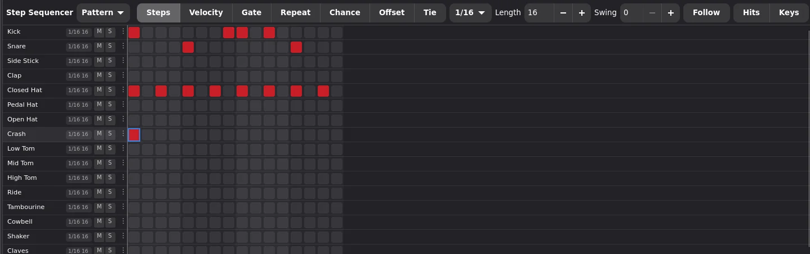

Everything in Solstice
A complete digital audio workstation, free and open source, built first for recording and finishing a band's songs. Each page explains what the features do and why they work the way they do.

Recording
Everything between plugging in and a comped take: inputs, monitoring that stays out of the way, take folders, count-in, a tuner that reaches drop tunings, and protection for the performance you can't play again.

Guitar and bass
Record clean and shape the tone afterwards: channel strips laid out as Pedals, Amp, Cabinet and Effects, Neural Amp Modeler and an impulse response loader built in, and re-amping through your interface.

Editing and drums
Tidy takes, program a drum part when the drummer isn't there, and try the song a different way round before committing to it.

Mixing
A mixer that reads the way the signal flows, an EQ on every channel, buses, VCAs, side-chains and headphone mixes, and controls built to be quick with a mouse.

Mastering and export
Measure loudness the way streaming services do, compare against a finished record at the same level, and export a master, stems or a bounce.

Plug-ins
VST3, CLAP and LV2 on Linux, Windows plug-ins set up for you through yabridge, and a full set of built-in effects and instruments.

Projects and safety
Start from a template, keep every song in one folder, and stop worrying about crashes, power cuts and full disks.

Switching to Solstice
Already know your way round a DAW? Solstice uses the layout, ideas and shortcuts that have become standard, on Linux, for free.
All of it, free.
No feature is held back for a paid version, because there isn't one.